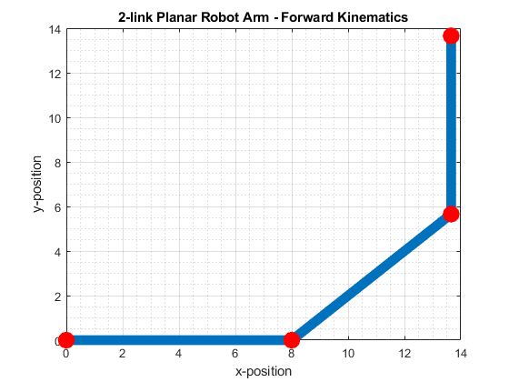

Contents
Housekeeping
clear all
close all
clc
Get Endpoint
a1 = 8;
a2 = 8;
a3 = 8;
theta1 = 0;
theta2 = pi/4;
theta3 = pi/4;
[x,y] = getEndpoint(theta1,theta2,theta3,a1,a2,a3);
fprintf("The final position of the endpoint is: (%f,%f)\n",x,y);

Get Configuration
a1 = 8;
a2 = 8;
a3 = 8;
location = [0,4];
phi = 3*pi/2;
[theta1,theta2,theta3] = getConfig(location,a1,a2,a3,phi);
fprintf("The final configuration of the robot arm is: \n");
fprintf("Theta1: %f rad, Theta2: %f rad, Theta3: %f rad\n",theta1,theta2,theta3);
The final configuration of the robot arm is:
Theta1: 0.848062 rad, Theta2: 1.445468 rad, Theta3: 2.418858 rad

Functions
function[x,y] = getEndpoint(theta1,theta2,theta3,a1,a2,a3)
T1 = [cos(theta1) -sin(theta1) 0; sin(theta1) cos(theta1) 0; 0 0 1];
T2 = [cos(theta2) -sin(theta2) a1; sin(theta2) cos(theta2) 0; 0 0 1];
T3 = [cos(theta3) -sin(theta3) a2; sin(theta3) cos(theta3) 0; 0 0 1];
T4 = [1 0 a3; 0 1 0; 0 0 1];
pos = T1*T2*T3*T4*[0 0 1]';
x = pos(1);
y = pos(2);
figure
xs = [0 a1*cos(theta1) (a1*cos(theta1)+ a2*cos(theta1+theta2)) ...
(a1*cos(theta1)+ a2*cos(theta1+theta2)+a3*cos(theta1+theta2+theta3))];
ys = [0 a1*sin(theta1) (a1*sin(theta1)+ a2*sin(theta1+theta2)) ...
(a1*sin(theta1)+ a2*sin(theta1+theta2)+a3*sin(theta1+theta2+theta3))];
plot(xs,ys,'Linewidth',8)
hold on
scatter(xs,ys,'or','Linewidth',8)
grid on
grid minor
title('2-link Planar Robot Arm - Forward Kinematics')
xlabel('x-position')
ylabel('y-position')
end
function[theta1,theta2,theta3] = getConfig(location,a1,a2,a3,phi)
x3 = location(1);
y3 = location(2);
x2 = x3 - a3*cos(phi);
y2 = y3 - a3*sin(phi);
theta2 = acos((x2^2 + y2^2 - a1^2 - a2^2)/(2*a1*a2));
cos_t1 = ((a1 + a2*cos(theta2))*x2 + a2*sin(theta2)*y2)/(x2^2 + y2^2);
sin_t1 = ((a1 + a2*cos(theta2))*y2 - a2*sin(theta2)*x2)/(x2^2 + y2^2);
theta1 = atan(sin_t1/cos_t1);
theta3 = phi - (theta1+theta2);
figure
xs = [0 a1*cos(theta1) (a1*cos(theta1)+ a2*cos(theta1+theta2)) ...
(a1*cos(theta1)+ a2*cos(theta1+theta2)+a3*cos(theta1+theta2+theta3))];
ys = [0 a1*sin(theta1) (a1*sin(theta1)+ a2*sin(theta1+theta2)) ...
(a1*sin(theta1)+ a2*sin(theta1+theta2)+a3*sin(theta1+theta2+theta3))];
plot(xs,ys,'Linewidth',8)
hold on
scatter(xs,ys,'or','Linewidth',8)
grid on
grid minor
title('2-link Planar Robot Arm - Inverse Kinematics')
xlabel('x-position')
ylabel('y-position')
end
The final position of the endpoint is: (13.656854,13.656854)